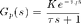
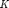
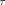
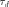
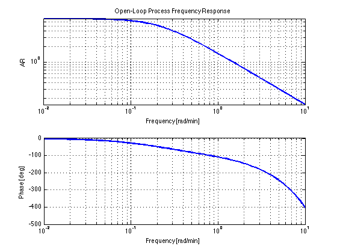
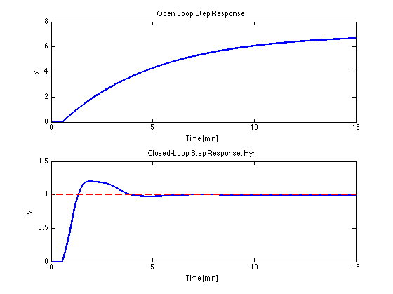
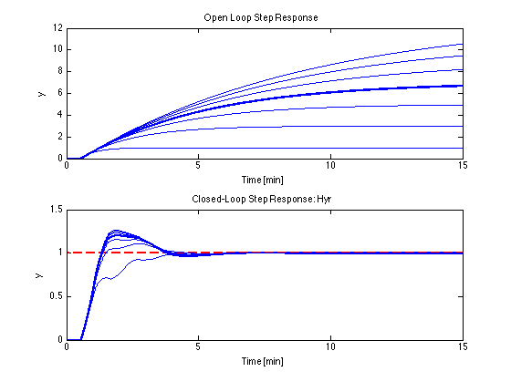
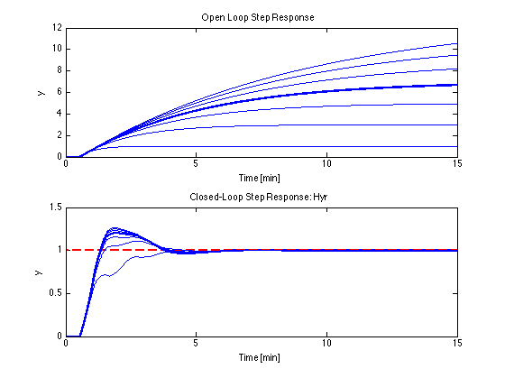
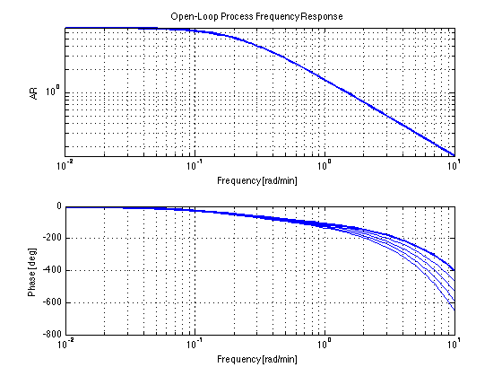
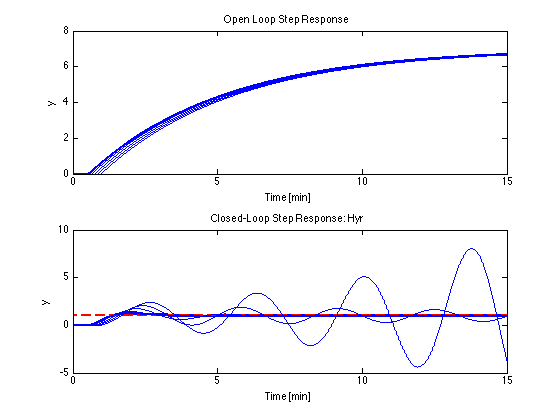

Demonstrating the Effect of Model Error on PID Control
File: Ch12_PID_ModelError.m
Processes are never exactly understood; even the best dynamical models will not perfectly match the behavior of the process being model. For control design, the issue is whether the closed-loop controlled behavior of the process will be sensitive to minor errors in the model used to tune the controller. This demonstration illustrates some of the complexity behind this question.
Contents
Nominal Process Model
Consider a process model consisting of a first-order transfer function with dead-time.

where the process parameters ,  and  are not precisely known.
We'll start with a nominal process model where the steady state gain and the time constants are chosen to match the observed cross-over frequency and critical amplitude ratio observed in an auto-tuning experiment.
K = 7; wco = 3; ARc = 0.5; tau = sqrt((K/ARc)^2 - 1)/wco; tau_d = (180-(180/pi)*atan(wco*tau))/((180/pi)*wco); Gp = tf(K,[tau 1],'InputDelay',tau_d,'TimeUnit','minutes')
Gp =
7
exp(-0.547*s) * -----------
4.655 s + 1
Continuous-time transfer function.
PID Controller
The Ziegler-Nichols tuning rules only require knowledge of the cross-over frequency and the amplitude ratio at cross-over. We implement a simple two-degree of freedom PID control using the ZN tuning rules for PID control. We'll be using this same PID control for all of the examples to follow.
Kcu = 1/ARc; Pu = 2*pi/wco; Kp = 0.6*Kcu; Ti = Pu/2; Td = Pu/8; P = tf(1,1,'TimeUnit','minutes'); I = tf(1,[Ti 0],'TimeUnit','minutes'); D = tf([Td 0],[Td/10 1],'TimeUnit','minutes'); Ky = Kp*(P + I + D) Kr = Kp*(0.5*P + I + 0*D)
Ky =
0.3619 s^2 + 1.288 s + 1.2
--------------------------
0.02742 s^2 + 1.047 s
Continuous-time transfer function.
Kr =
0.6283 s + 1.2
--------------
1.047 s
Continuous-time transfer function.
Nominal Closed-Loop Response
Following our usual procedures, we can evaluate control performance under the assumption that the model used for controller tuning is an accurate model of the process. As we expect, if there was no model error then the Ziegler-Nichols tuning gives reasonably good setpoint control.
% Select time and frequency grids t = 0:.001:15; w = logspace(-2,1,100); % Calculate open-loop response [mag,phase] = bode(Gp,w); yol = step(Gp,t); % Calculate losed-loop response Hyr = Gp*Kr/(1+Gp*Ky); ycl = step(Hyr,t);
Display results
figure(1);clf; subplot(2,1,1); loglog(w,mag(:),'LineWidth',2); xlabel('Frequency [rad/min]'); ylabel('AR'); title('Open-Loop Process Frequency Response'); grid; hold on; subplot(2,1,2); semilogx(w,phase(:),'LineWidth',2); xlabel('Frequency [rad/min]'); ylabel('Phase [deg]'); grid; hold on; figure(2);clf; subplot(2,1,1); plot(t,yol,'LineWidth',2); xlabel('Time [min]'); ylabel('y'); title('Open Loop Step Response'); hold on subplot(2,1,2); plot(t,ycl,'b',t,(t>0),'r--','LineWidth',2); xlabel('Time [min]'); ylabel('y'); title('Closed-Loop Step Response: Hyr'); hold on 
Case 1: Uncertain Process Gain and Time Constant
We repeat the calculations for a range of possible values for the steady state gain. For each gain the the first order time constant is adjusted to maintain the same cross-over frequency and the same AR.
for K = 1:2:13 % Adjust model parameters tau = sqrt((K/ARc)^2 - 1)/wco; % tau_d = (180-(180/pi)*atan(wco*tau))/((180/pi)*wco); % Recalculate open- and closed-loop responses Gp = tf(K,[tau 1],'InputDelay',tau_d,'TimeUnit','minutes'); [mag,phase] = bode(Gp,w); yol = step(Gp,t); Hyr = Gp*Kr/(1+Gp*Ky); ycl = step(Hyr,t); % Update display figure(1); subplot(2,1,1); loglog(w,mag(:)); subplot(2,1,2); semilogx(w,phase(:)); figure(2); subplot(2,1,1); plot(t,yol); subplot(2,1,2); plot(t,ycl); end
 
 We observe the same PID controller can do an adequate job of setpoint control for a wide range of steady state gains. This is not surprising since other model parameters have been adjusted to changes in the cross-over conditions small.
Case 2. Uncertain Time-Delay
Next consider the effect of increaseing the time-delay. In this case, however, the other model parameters are not adjusted.
% Restore the nominal process model K = 7; tau = sqrt((K/ARc)^2 - 1)/wco; tau_d = (180-(180/pi)*atan(wco*tau))/((180/pi)*wco); Gp = tf(K,[tau 1],'InputDelay',tau_d,'TimeUnit','minutes'); % Recalculate the nominal open- and closed-loop responses [mag,phase] = bode(Gp,w); yol = step(Gp,t); Hyr = Gp*Kr/(1+Gp*Ky); ycl = step(Hyr,t); % Initialize display figure(3);clf; subplot(2,1,1); loglog(w,mag(:),'LineWidth',2); xlabel('Frequency [rad/min]'); ylabel('AR'); title('Open-Loop Process Frequency Response'); grid; hold on; subplot(2,1,2); semilogx(w,phase(:),'LineWidth',2); xlabel('Frequency [rad/min]'); ylabel('Phase [deg]'); grid; hold on; figure(4);clf; subplot(2,1,1); plot(t,yol,'LineWidth',2); xlabel('Time [min]'); ylabel('y'); title('Open Loop Step Response'); hold on subplot(2,1,2); plot(t,ycl,'b',t,(t>0),'r--','LineWidth',2); xlabel('Time [min]'); ylabel('y'); title('Closed-Loop Step Response: Hyr'); hold on
Repeat calculations for process models with longer time delays
for tau_d = (1:.2:1.8)*tau_d % Recalculate open- and closed-loop responses Gp = tf(K,[tau 1],'InputDelay',tau_d,'TimeUnit','minutes'); [mag,phase] = bode(Gp,w); yol = step(Gp,t); Hyr = Gp*Kr/(1+Gp*Ky); ycl = step(Hyr,t); % Update display figure(3); subplot(2,1,1); loglog(w,mag(:)); subplot(2,1,2); semilogx(w,phase(:)); figure(4); subplot(2,1,1); plot(t,yol); subplot(2,1,2); plot(t,ycl); end 
In this case a small change in the open-loop step response can result in a big change in the closed-loop behavior. The root cause is that small changes in time delay can substantially alter the conditions at cross-over.
Conclusions
- When modeling for control, it is essential to accurately model the cross-over frequency and the amplitude ration at cross-over.
- Modeling for steady-state response and modeling for control have different requirements.
- WHEN MODELING, IT IS ESSENTIAL TO UNDERSTAND THE INTENDED PURPOSE OF MODEL.